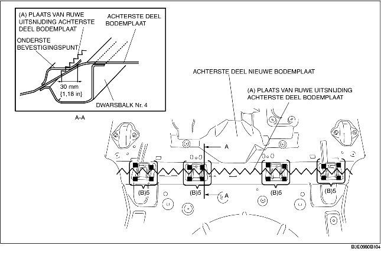
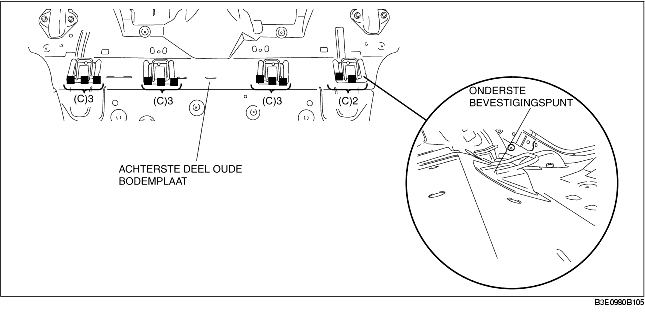
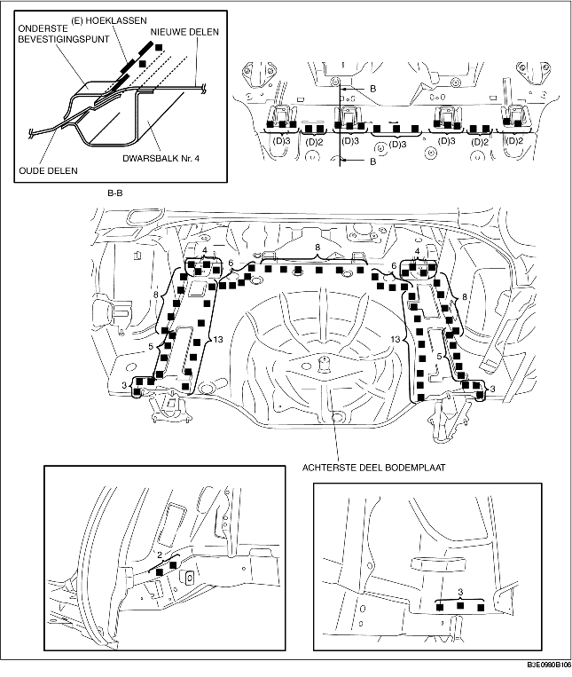

1. Snijd voor het plaatsen het gedeelte op het nieuwe achterste deel van de bodemplaat aangegeven met (A) uit, boor de 20 punten bij (B) uit en verwijder het onderste bevestigingspunt.

2. Boor de 11 punten aangegeven met (A) uit.
3. Verwijder het onderste bevestigingspunt met een beitel en buig het naar boven om het plaatsen te vergemakkelijken.

4. Breng puntlasafdichtmiddel aan op de plaatsen waar de overlappende delen van de nieuwe en de oude delen gelast worden. Lijm de te lassen delen op elkaar en breng pluglassen aan op de 18 plaatsen aangegeven met (D). Breng een hoeklas aan langs de naden van het onderste bevestigingspunt, en de nieuwe en oude delen op de plaatsen aangegeven met (E).
5. Las de overige punten en plaats het achterste deel van de bodemplaat.
